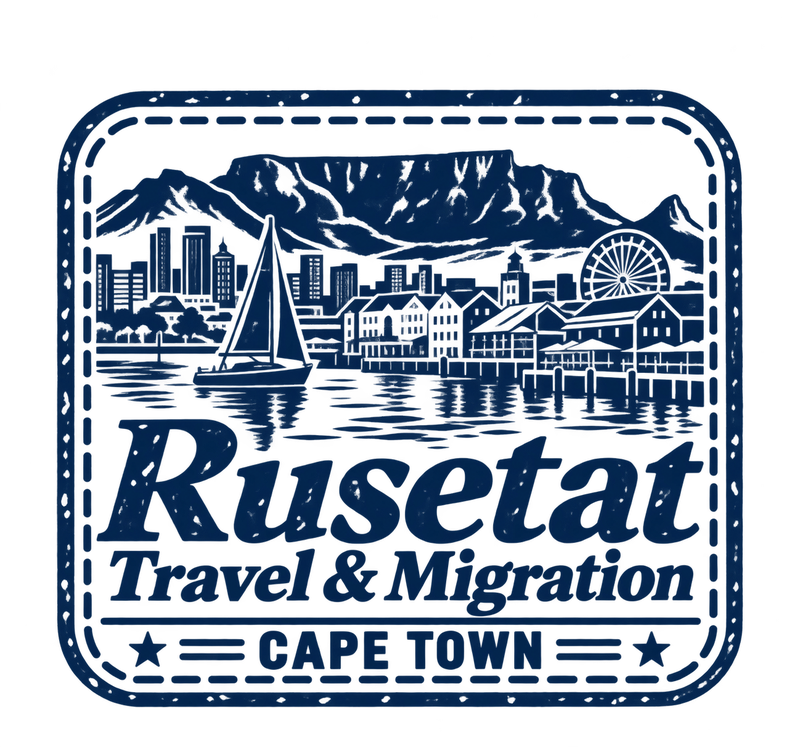
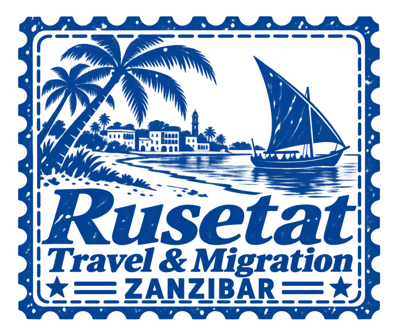

16. Cape Town

/travel/destinations/cape-town/
Owner approved
15 previous stamps approved. These five approved. Website unchanged.

/travel/destinations/cape-town/
Owner approved
/travel/destinations/kariba/
Owner approved
/travel/destinations/victoria-falls/
Owner approved

/travel/destinations/zanzibar/
Owner approved
/travel/destinations/mauritius/
Owner approved